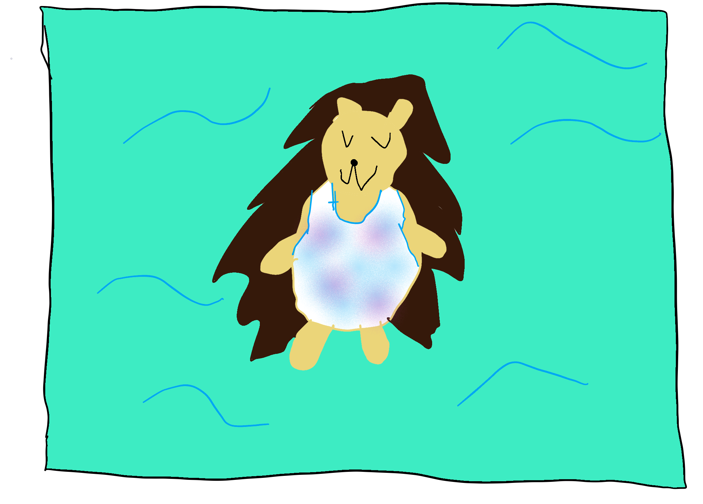

CCA Swimming Classes for Hedgehogs

Noob Levels
Level 1: Beginner
Requirements
- At least 3yo.
- Used to water.
Exit Requirements:
- Feel comfortable without parents in water.
- Bubbles for 2 sec.
- Front/back relaxed float for 10 sec.
- Climbing in and out of the water.
Level 2: Older Noob
Requirements:
- Bubbles for 2-5 sec, depending on age.
- Front/back relaxed float.
- Climb in and out of pool unassisted.
Exit Requirements:
- Kickboard - front/back kicks 25 yd.
- Tread water 30 sec.
- Streamline glide 5 ft.
Intermediate Level
Level 3: Intermediate
Requirements:
- Kicking with a floatation device for 25 yd.
- Treading water for 30 sec.
- Streamline glide 5 ft.
Exit Requirements:
- Freestyle 25 yd.
- Backstroke 25 yd.
- Kickboard - breakstroke/dolphin kick 25 yd.
When student passes this level, they can join a lap swim.
Advanced Levels
Level 4: Early Advanced
Requirements:
- Freestyle 25 yd.
- Backstroke 25 yd.
Exit Requirements:
- Streamline glide with pop-up breathing.
- 50 Freestyle
- 50 Backstroke
- 50 Breaststroke
- 50 Butterfly
- Tread water 1 min
- Deep Water Swim Test (DWST) *
Level 5: Advanced / Pre-Competitive
Requirements:
- Each of the 4 strokes 50 yd
- Streamline glide with pop-up breathing
- Tread water 1 min
- DWST passed
Exit Requirements:
- Freestyle 100 yd
- Backstroke 100 yd
- Breaststroke 100 yd
- Butterfly 100 yd
- Retrieve object at a depth of 6-10 ft, depending on age.
Students who pass this level can test for a swim team.
*Dive and swim in deep water.